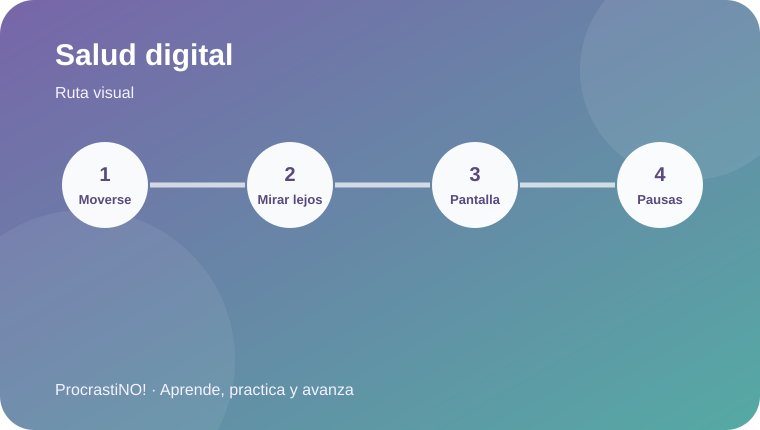

Módulo 3 · 3
Tiempo de pantalla y pausas
Organiza pausas y cambios de postura y revisa la colocación del monitor y las muñecas.


Tu estación también importa
Las pausas y el movimiento ayudan a interrumpir periodos prolongados de sedentarismo. OSHA recomienda colocar el monitor frente a ti y aproximadamente a la altura de los ojos, además de cuidar la postura de manos y muñecas.
👀 Monitor
🪑 Postura
↕️ Cambios de posición
🚶 Pausas activas
Idea clave:
La OMS recomienda reducir el tiempo sedentario y sustituirlo por actividad física de cualquier intensidad cuando sea posible.
Referencias
-
World Health Organization. (2020). WHO guidelines on physical activity and sedentary behaviour. https://www.who.int/publications/i/item/9789240015128
Occupational Safety and Health Administration. (n.d.). Computer workstations. https://www.osha.gov/etools/computer-workstations/